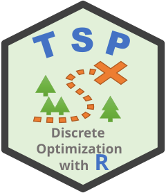

Using the Concorde TSP solver
Michael Hahsler and Kurt Hornik
Source:vignettes/concorde.Rmd
concorde.RmdThis vignette shows how to use the Concorde TSP solver (Applegate et al. 2006) in the R package
TSP (Hahsler and Hornik
2007). The Concorde TSP solver is one of the most advanced and
fastest exact solvers for the symmetric traveling salesperson problem.
It uses the branch-and-cut method (Padberg and
Rinaldi 1990) and has been used to solve instances with tens of
thousands of cities. The Concorde distribution also contains
linkern, an implementation of the Chained Lin-Kernighan
heuristic (Applegate et al. 2003) that
finds very good tours for large instances in a short time.
TSP provides interfaces to both programs via
solve_TSP() with method = "concorde" and
method = "linkern". The programs are not
included in the package and have to be installed separately. This
vignette shows how to install and use them.
Note: Concorde was not found when this vignette was built. The code that needs Concorde is shown, but its output is not.
Installing Concorde
Concorde is free for academic research use, but is distributed under a license that does not allow commercial use. Because of this license and since it needs to be compiled for each platform, it is not bundled with TSP.
- Download Concorde from the Concorde download page. You can either download precompiled executables for your operating system (if available) or the source code and compile it. Compiling Concorde additionally requires an LP solver (e.g., QSopt, which is also available from the download page, or CPLEX) and may need some adaptation on recent compilers.
- Make sure the executables
concordeandlinkern(the latter is built by default in the ConcordeLINKERNdirectory) are executable. - Tell TSP where to find them. Either put the
directory with the executables into the
PATHenvironment variable (before starting R, or usingSys.setenv()), or set the path in R:
library(TSP)
## directory containing the executables
concorde_path("~/concorde/")concorde_path() without an argument returns the path
that is currently used and gives an error if no executables can be
found. This can be used to check the installation:
To make the path permanent, add the call to
concorde_path() (or the PATH setting) to your
.Rprofile.
Solving a TSP with Concorde
Concorde works with any TSP, and with ETSP
objects. We use the USCA50 data set with distances between
50 cities and compare the exact result to the heuristics.
The tour is a permutation of the cities. These are the first cities in the order they are visited:
Since the cities have GPS coordinates in the data set
USCA312_GPS, we can draw the tour on a map. The map is only
drawn if the suggested package maps is installed.
data("USCA312_GPS")
coords <- USCA312_GPS[match(labels(USCA50), USCA312_GPS$name), c("long", "lat")]
plot(coords, cex = .5, col = "red", xlab = "longitude", ylab = "latitude",
main = paste("Optimal tour, length:", tour_length(tour)))
if (requireNamespace("maps", quietly = TRUE))
maps::map("world", col = "gray", add = TRUE)
## close the cycle by returning to the first city
order <- c(as.integer(tour), as.integer(tour)[1])
lines(coords[order, ])The TOUR is an ordinary object, so we can compare it
with a heuristic tour, here the default heuristic (arbitrary insertion
followed by 2-opt).
set.seed(1234)
tour_heuristic <- solve_TSP(USCA50)
c(heuristic = tour_length(tour_heuristic), concorde = tour_length(tour))For USCA50, the optimal tour length is 14497. Since
Concorde finds the optimal tour, no heuristic can be shorter.
Chained Lin-Kernighan
"linkern" is used the same way. It does not guarantee an
optimal solution, but is much faster for large problems. The number of
kicks (random restarts of the local search) can be set with the command
line option -R. More kicks lead to better tours but take
longer.
Control parameters
Besides the general arguments, the following parameters can be passed
on to Concorde and linkern using control or directly as
arguments to solve_TSP():
-
clo: a string with additional command line options.concorde_help()andlinkern_help()print all available options. The options-x,-o,-Nand-Qare used by the interface and cannot be set. -
precision: the number of decimal places that are kept when distances are converted to integers (default: 6). -
verbose: ifFALSE, the output of the program is suppressed. -
keep_files: keep the temporary directory with the input and result files (for debugging). -
seed: This parameter is typically not necessary and a reproducible result can be obtained using R’s since a seed is created usingset.seed()function. If an exact seed needs to be used for the executable, then specify the seed as a
whole number between 0 and.Machine$integer.max(2147483647). Do not use-sincloto set the seed. -
repandoptare not available for these methods.
## use fast cuts only (-V); this may not give the optimal tour
solve_TSP(USCA50, method = "concorde", clo = "-V", verbose = FALSE)Integer distances and precision
Concorde and linkern can only work with integer distances. The
interface therefore multiplies the distances by \(10^{precision}\), rounds them and writes
them to a file in TSPLIB format (see ?write_TSPLIB). A
warning is shown if the distances are so large that rounding errors
worse than precision cannot be avoided. Negative distances
(for example, resulting from the reformulation of an ATSP) are shifted
so the smallest distance is zero, which does not change the optimal
tour. If you need to reduce the rounding error, scale your distances or
increase precision.
Infinite distances are replaced by a large finite value (see
?solve_TSP).
Asymmetric problems
Concorde cannot solve asymmetric TSPs directly.
solve_TSP() reformulates an ATSP as a
symmetric TSP with twice the number of cities
(reformulate_ATSP_as_TSP()), solves it, and removes the
dummy cities from the resulting tour. This is done automatically with a
warning that can be suppressed by as_TSP = TRUE.
Shortest Hamiltonian paths
Concorde can also be used to solve related problems by transforming them into a TSP. For example, to find the shortest path (not cycle) through all cities, insert a dummy city which has a distance of zero to all other cities and cut the tour at the dummy city.
tsp <- insert_dummy(USCA50, label = "cut")
tour <- solve_TSP(tsp, method = "concorde", verbose = FALSE)
path <- cut_tour(tour, "cut")
head(labels(path))The length of the path is the length of the tour since the dummy city does not add any distance:
tour_length(tour)Interrupting and troubleshooting
- If Concorde takes too long, interrupt
solve_TSP()withEscorCtrl-C. On most systems, this also stops the Concorde process. If it keeps running, terminate the processconcordeusing your operating system. - The error “Can not find executables for concorde or linkern” means
that TSP cannot find the programs. Check the path with
concorde_path(). - If the executables are found but do not run (e.g., “exited with
status”), run
concorde_help()and check that the programs are compiled for your platform, are executable, and (on Linux/macOS) are not blocked by the system’s security settings. - Use
verbose = TRUE(default) andkeep_files = TRUEto see Concorde’s output and inspect the files that were passed to it. - Running very large exact problems can take days (the 24,978 city
tour through Sweden needed almost 100 CPU years). For large instances,
use
"linkern".
See also ?Concorde and ?solve_TSP.